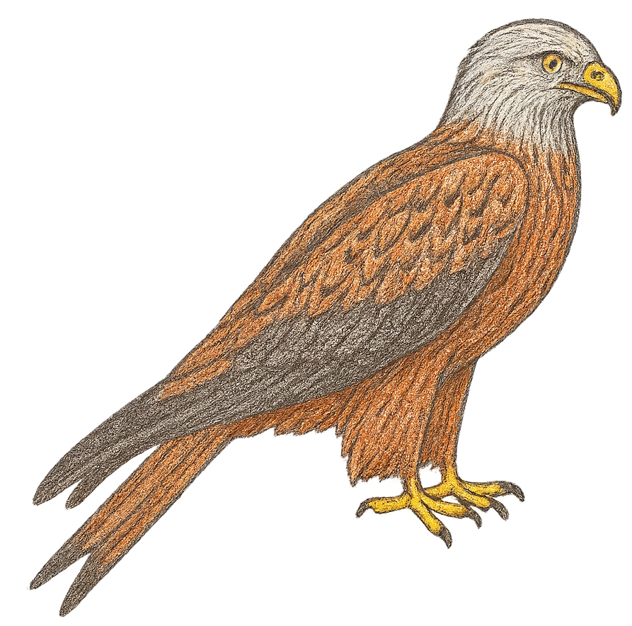
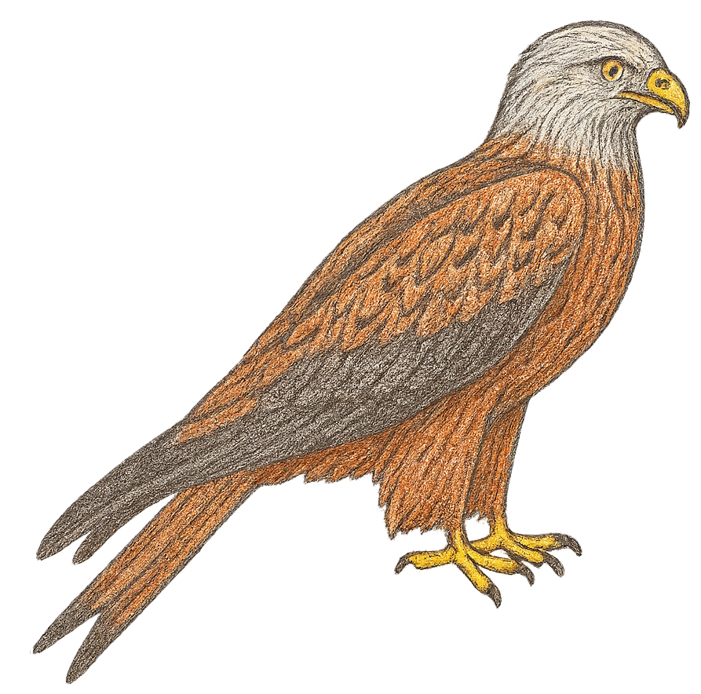

Allgemeines
Der Rotmilan ist ein eindrucksvoller Greifvogel und gilt als Deutschlands heimlicher Wappenvogel. Er ist etwa 60 bis 70 Zentimeter groß, hat eine Flügelspannweite von bis zu 170 Zentimetern und wiegt ungefähr 1 bis 1,3 Kilogramm. Sein Gefieder ist rostrot-braun, und besonders auffällig ist der tief gegabelte Schwanz, an dem man ihn gut im Flug erkennen kann. In der Wildnis können Rotmilane bis zu 20 Jahre alt werden. Verbreitet ist er vor allem in Europa, wobei Deutschland einen großen Teil der Weltpopulation beherbergt.
Lebensraum
Rotmilane bevorzugen abwechslungsreiche Landschaften, die aus Wäldern, Feldern und Wiesen bestehen. Besonders gern brüten sie an Waldrändern, wo sie ihre Horste in hohe Bäume bauen. Von dort aus fliegen sie in die offene Landschaft, um nach Nahrung zu suchen. Auch in Streuobstwiesen und Heckenlandschaften fühlen sie sich wohl, da es dort viele Beutetiere gibt.
Nahrung
Rotmilane ernähren sich vor allem von kleinen Säugetieren wie Mäusen und Maulwürfen, fressen aber auch Vögel, Fische, Insekten und manchmal Aas. Sie sind geschickte Jäger, nutzen aber auch Aas am Straßenrand. Zu ihren Feinden zählen größere Greifvögel wie der Uhu oder der Habicht, die Gelege und Jungvögel gefährden können.
Besonderheiten
Typisch für den Rotmilan ist sein tief gegabelter Schwanz, mit dem er besonders wendig durch die Luft gleiten kann. Im Flug wirkt er deshalb sehr elegant und leicht. Rotmilane gehören zu den sogenannten „Verantwortungsarten“. Das bedeutet, dass Deutschland eine besondere Verantwortung für ihr Überleben hat, da hier ein großer Teil der Weltpopulation lebt.
Gefährdung und Schutz
Der Rotmilan ist streng geschützt, da sein Bestand in manchen Regionen gefährdet ist. Besonders große Gefahr droht ihm durch Windkraftanlagen, an denen viele Vögel tödlich verunglücken. Auch der Verlust von Lebensräumen durch intensive Landwirtschaft spielt eine Rolle. Schutzmaßnahmen bestehen darin, Brutgebiete zu erhalten und Windkraftanlagen so zu planen, dass Rotmilan-Flugrouten nicht gefährdet werden.
So klingt der Rotmilan
Zurück zur Startseite